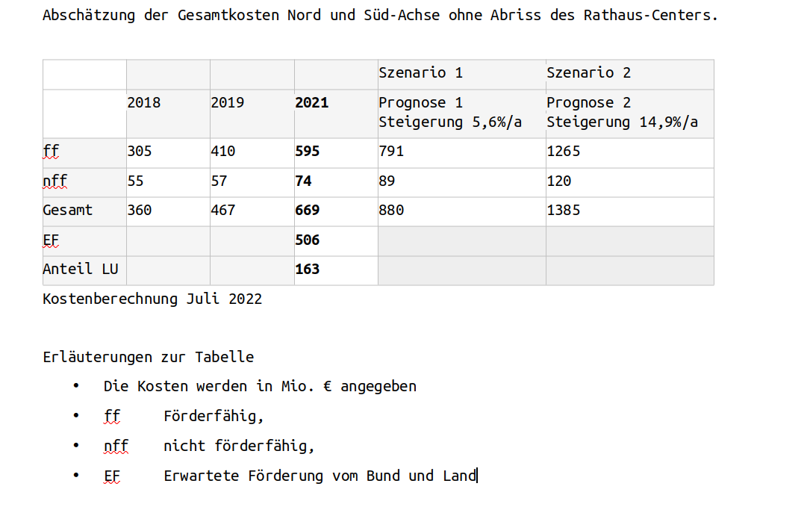
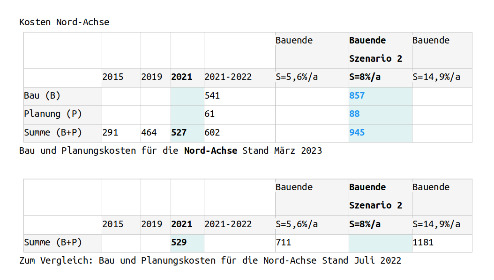
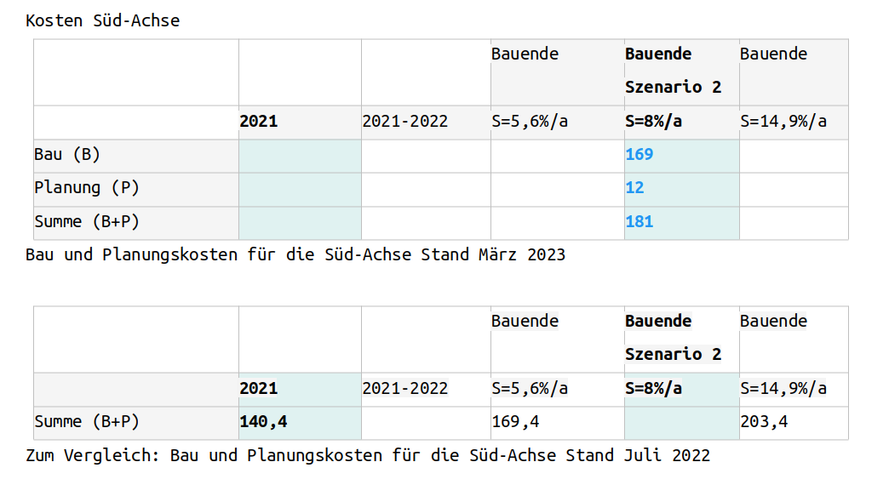

F i n a n z i e l l e B e l a s t u n g u n d
F i n a n z i e r u n g
-
Auf der Website Ludwigshafen diskutiert informiert die Stadt Ludwigshafen zu wichtigen Vorhaben. An prominenter Stelle der Website - Bereich "Aktuelle Beteiligungsprojekte" - stehen drei (3) Bauprojekte , die aus planerischer Sicht eng miteinander verwoben sind:
- Das Rathaus-Center
- Die Hochstraße Süd
- Die Helmut Kohl Allee (an der Stelle der abzureißenden Hochstraße Nord)
Wichtig sind diese Projekte aus politischer Sicht nicht zuletzt wegen der beträchtlichen finanziellen Belastung, die sie verursachen. Um so erdrückender erscheint sie, wenn man die prekäre finanzielle Lage der Stadt vor Auge hat - vgl. Kap. Links und Referenzen.
Über alle Parteigrenzen hinweg identifizieren sich die Lokalpolitiker Ludwigshafens seit den 1960er Jahren stark mit der Mobilität auf Straßen (PKW, LKW). Damals entstand die bis heute das Stadtbild prägende Verkehrsinfrastruktur. Ludwigshafen sollte für die umliegende Region obligatorischer Knoten werden, vor allem für den Durchgangsverkehr in Richtung Mannheim oder des BASF Areal, weil dies für die Region vor überragender ökonomischer Bedeutung sei.
Infrastrukturen dauern jedoch nicht ewig. Seit ca. 2010 weist die Bausubstanz der Verkehrsader Nord und Süd immer mehr Schaden auf. Alternative Konzepte standen zur Diskussion. Ab 2015 nahm das Planungskonzept Gestalt. 2018 kam die Planung zu einem Ergebnis.
Die Stadt hat offensichtlich nicht genügend finanzielle Reserven, um solche Projekte im Alleingang zu stemmen. Erst als im Sommer 2023 Bund und Land einen substantiellen Beitrag zu den schlummernden Plänen zusagten, wurde das Rad in Gang gesetzt. Herbst 2023 begann die Umsetzung des damaligen Entwurfs (bis auf untergeordnete Anpassungen). Für die Bürger offenbart sich nun konkret das Ausmaß der Auswirkungen und Proteste organisieren sich, wie z.B. von der Bürgerinitiative bilelu artikuliert.
Die Sanierung der Nord-Achse (alias die Helmut-Kohl-Allee) ist bei weitem das umfangreichste Vorhaben. Die Bauarbeiten sollen mindestens 8 Jahre dauern, bis 2033-2034 - vgl. z.B. Wikipedia: LU Hochstraße Nord. Daher liegt das Gros der finanziellen Belastung eindeutig auf diesem Vorhaben. Dadurch bedingt liegt dieses Teilprojekt im Zentrum der Kritik der Bürgerinitiativen.
Nachstehend werden von der Stadtverwaltung veröffentlichte Abschätzungen und Prognosen zur finanziellen Belastung der Projekte in zeitlicher Reihenfolge (Historie) übersichtlich dargelegt.
-
Stadtratssitzung vom 18.07.2022
-
Quellen, Autoren Link und Titel Öffentliche Stadtratsitzung vom 18.07.2022
2 Dokumente:- Stadtratsvorlage TOP 05
- Präsentation des Hochstraßensystems
-
Stadtratsvorlage TOP 05 (PDF-Datei) und
SR Hochstraßensystem (PPTX-Datei)
-
Hochstraßensystem (PPTX-Datei) (alternative Seite)
Oder falls der Link der Stadtverwaltungs-Website deaktiviert wurde:
-
-
Bis zur Sperrung der Hochstraße Süd passierten täglich mehr als 100.000 Fahrzeuge das Brückensystem; rund 52.000 Fahrzeuge auf der Hochstraße Süd, rund 45.000 auf der Hochstraße Nord.
-
Das Hochstraßensystem Ludwigshafen funktioniert als kommunizierende Röhre wodurch Verkehrsströme flexibel je nach verkehrlicher Auslastung auf die Rheinbrücken verteilt werden. Weiterhin werden die Verkehrsströme zukünftig durch ein Verkehrsleitsystem unterstützt, das Verkehre je nach Auslastung oder Verkehrssituation auf die Rheinbrücken verteilen kann. Daraus ergibt sich:
-
Süd-Achse:
Erst soll die Hochstraße-Süd neu gebaut werden. Der Ersatzbau mit gleicher Leistungsfähigkeit wie vorher soll bis Ende 2025 fertiggestellt werden.Beachte: Die gleichbleibende Leistungsfähigkeit ist Voraussetzung dafür, dass ein erneutes Genehmigungsverfahren unnötig ist, was Planung und Umsetzung deutlich beschleunigt.
-
Nord-Achse:
Voraussichtlich ab 2026 soll die Hochstraße-Nord abgerissen werden und an deren Stelle die ebenerdige Helmut-Kohl-Allee gebaut, welche bis achtspurig breit beide Viertel Ludwigshafen-Zentrum und Ludwigshafen-Helmshof trennen wird. -
Der Zentralbereich der Nord-Achse tangiert den Bereich des Rathaus-Centers.
Am 21.09.2020 entschied das Stadtrat das Center - wegen bauliche und brandschutztechnische Mängel, deren Behebung als unwirtschaftlich erachtet wurden, gleichsam zurückzubauen (Die dazugehörige Machbarkeitsstudie wurde im BGA am 16.05.2022 vorgestellt). Aufgrund des Rückbaus wurden die Plänen für die Nord-Achse angepasst.
-
-
-
Gesamtkosten Nord und Süd Achsen ohne Abriss des Rathauscenters
^
Auch die letzte Abschätzung im Jahr 2021 (Gesamtbetrag = 669 Mio. Euro) ist mit erheblichen Risiken behaftet. Vor allem folgende Faktoren werden nach Einschätzung der Stadtverwaltung die Kosten in die Höhe treiben: Fachkräftemangel, Bauboom, Materialmangel.
Unter Berücksichtigung dieser Sachlage kann nicht von stabilen oder kalkulierbaren Baupreisen ausgegangen werden. Im Klartext: die Baupreissteigerung darf bei anhaltender Dynamik nicht übersehen werden. Beispielsweise erhöht eine (optimistische) Baupreissteigerungsrate von 5,6% per anno die in 2021 ermittelten Kosten in Höhe von 669 Mio. Euro auf einen Betrag von 880 Mio. Euro, der bis Ende der Bauphase zu Buche steht. Der Mehrbetrag ist in diesem günstigen Szenario gleich 211 Mio. Euro oder +31% der ursprünglichen Abschätzung.
Die Förderbeiträge von Bund und Land sind - nach unserem Verständnis - nicht "dynamisierbar": das Risiko der Kostensteigerung trägt zunächst die Stadt allein. Wenn die Stadt belegen kann, dass sie für erhöhte Kosten keine Verantwortung trägt (z.B. unverschuldete Zeitverzögerung), ist eine Nachverhandlung mit Bund und Land um weitere Zuschüsse theoretisch denkbar.
-
-
Stadtratssitzung vom 27.03.2023
-
Quellen, Autoren Link und Titel Öffentliche Stadtratsitzung vom 27.03.2023
2 Dokumente:
- Vorlagen TOP 07 Hochstraße Süd
- Präsentation des Hochstraßensystems
-
Bau- und Grundstückausschuss 27.03.2023 (Übersicht aller TOPs)
-
Als Begleitdokument zum TOP 07
Hochstraßensystem (PDF-Datei) (alternative Seite)
Falls der Link der Stadtverwaltungs-Website deaktiviert wurde: Hochstraßensystem (PDF-Datei).
Der Sachstandsbericht legt den (damaligen) Stand der Planung und Kostenberechnung des Hochstraßensystems dar. Geplantes Ende der Umsetzung: Süd-Achse (2026), Nord-Achse (2031, wenn die Süd-Achse rechtzeitig abgeschlossen wird.)
-
-
Nord-Achse bzw. Helmut-Kohl-Allee
^
-
^
Erläuterungen zu den Tabellen
- Die Kosten werden in Mio. Euro angegeben.
- Die Kostenberechnung werden dem Jahr der Berechnung zugeordnet.
-
Die Prognose der Kostenentwicklung bis Ende der Bauphase wird unter Annahme einer
Steigerungsrate in % pro Jahr (%/a) ermittelt.
Szenario 2 (Steigerung von 8% / a) wird offenbar von der Stadtverwaltung als realistisch angenommen. Die Kostensteigerung (ab einem gewissen Zeitpunkt) betrifft nicht Beträge, die schon bezahlt wurden. - Ein Vergleich zwischen den Berechnungen von Juli 2022 und März 2023 wird soweit möglich angestrebt, um die Dynamik der Kosten und ihrer Ermittlung besser zu erfassen.
Nach Auffassung der Stadtverwaltung ist folgender Zeitrahmen realistisch:
-
Süd-Achse:
Der Bau beginnt Ende 2023 bzw. Anfang 2024. Ende der Bauphase ist gegen Ende 2025 -
Nord-Achse:
Der Bau startet bis auf einzelne Bauwerke - z.b. die Westbrücke - nach Ende des Bauphase der Süd-Achse (um sicherzustellen, dass mindestens eine der beiden Achsen funktionstüchtig bleibt). Ende der Bauphase ist gegen Mitte 2033
-
-
-
Stadtratssitzung vom 17.07.2023
-
Quellen, Autoren Link und Titel Öffentliche Stadtratsitzung vom 17.07.2023
Sitzungsvorlagen TOP 03Bürgerinformationssystem Stadtratsitzung 17.07.2023
Oder falls der Link der Stadtverwaltungs-Website deaktiviert wurde
-
In Bezug auf die Kosten der Projekte gibt es keine neuen Daten.
Eine große Nachricht gibt es jedoch:
Bund und Land haben gerade eine Förderung in Höhe von 85% der zuwendungsfähigen Kosten für das Gesamtprojekt "Hochstraßen-LU" zugesagt. Die Zuwendungen belaufen sich auf insgesamt 473,5 Mio. Euro anstatt des von der Stadt beantragten Betrags von 505 Mio. Euro (Differenz = 31,6 Mio. Euro). Der Bescheid mit den ausgewiesenen einzelnen Posten der Förderung bleibt noch aus - bis zum diesem Zeitpunkt Januar 2024.Mit der genannten Förderung rechtfertigt die Stadtverwaltung die vorzeitige Ausschreibung von Teilen des Bauprojektes "Hochstraße-Süd" (TOP 03 der Stadtratsitzung).
Statische Betrachtung der Kosten:
Die ursprüngliche (theoretische) Berechnung der Stadt
594 Mio. Euro = 505 Mio. Euro (Bund, Land = 85%) + 89 Mio. Euro (LU = 15%)Nach Bekanntgebung des (aktuellen) Förderbeitrag von Bund und Land
594 Mio. Euro = 473,5 Mio. Euro (Bund, Land = 79%) + 120,5 Mio. Euro (LU = 21%)Dynamische Betrachtung der Kosten:
Es wird nur ein Szenario berücksichtigt: das Szenario 2 der Stadtverwaltung unter der Annahme einer jährliche Preissteigerung von 8%. (Die Stadtverwaltung erachtet diese Steigerungsrate über einen Zeitraum von ca. 10 Jahre als realistisch).
Szenario 2-1 ist der Idealfall, welcher die Stadtverwaltung in ihren Projektionen implizit zugrunde legt: die vollständige Übernahme der Kostensteigerung von Bund und Land.
Für solche Annahme gibt es keine rechtlich bindende Grundlage.
Bund und Land weisen darauf hin, dass eine Übernahme von Zusatzkosten denkbar ist, wenn sie der Stadt nicht verschuldet sind. Werden alle Zusatzkosten übernommen, wenn die Stadt keine Schuld trägt? Unter welchen Umständen gilt die Stadt als verantwortlich für eine Kostenerhöhung? Die Antworten auf solche Fragen lassen erheblichen Raum für Spekulationen.In Szenario 2-2 wird beispielhaft angenommen, dass die Stadt allein die Kostensteigerung tragen muss.
Über den Vergleich zwischen beiden Szenarien 2-1 und 2-2 wird das finanzielle Risiko der Stadt eingegrenzt und immer besser erfasst, je klarer die Kenntnis davon wird, wie die Zusatzkosten aufgeteilt werden.
Szenario 2-1 (Idealfall von der Stadtverwaltung vorausgesetzt)
1126 Mio. Euro = 925,7 Mio. Euro (Bund, Land) + 200,3 Mio. Euro (LU)Szenario 2-2 (Schlimmster Fall aus Sicht der Stadt)
1126 Mio. Euro = 473,5 Mio. Euro (Bund, Land) + 652,5 Mio. Euro (LU)Großprojekte in Deutschland, die ihre geplanten Kosten erheblich überschritten haben, sind grimmig mahnende Beispiele (siehe Berliner Flughafen, Stuttgarter Hauptbahnhof). Zudem lässt die politische und wirtschaftliche Großlage - auf nationaler und internationaler Ebene - nicht erkennen, dass der Staat so großzügig bleibt, wie in der Vergangenheit.
Wird die angenommene Steigerungsrate von 8% von der Wirklichkeit überholt? Wird die Stadt LU am Ende der Bauphase eher ca. 200 Mio. Euro oder ca. 650 Mio. Euro zu bezahlen haben? Schwer zu sagen.
-
-
Allgemeine Informationsseiten der Stadt Ludwigshafen
Beschreibung Link Termine (u.a. Stadtratsitzungen, Ortsbeirat) werden veröffentlicht
Der Besucher kann sich für einen gegebenen Źeitraum (Monat, Quartal, Jahr) alle Termine zeigen lassen und einen auswählen. Gegebenenfalls werden zugehörige Unterlagen bereitgestellt.Bürgerinformationssystem Quellen, Autoren Link und Titel LU diskutiert: Präsentation eines Vorhabens Helmut-Kohl-Allee LU diskutiert: Präsentation eines Vorhabens Hochstraße Süd LU diskutiert: Präsentation eines Vorhabens Rathaus Center Finanzielle Lage der Stadt Ludwigshafen
Datum Quellen, Autoren Link und Titel 21.12.2023 Kommunalinfo Mannheim Haushalt Ludwigshafen – Hintergründe zur Finanzkatastrophe 12.12.2023 SWR>> Aktuell Dauerhaft rote Zahlen: Stadt Ludwigshafen erwägt Klage gegen Bund und Land 10.09.2021 Ludwigshafen 24, Daniel Hagen Ludwigshafen: Fast 1,4 Milliarden Euro! Schuldenberg wächst weiter 22.03.2021 Vorbericht Haushalts-Plan 2021 Ludwigshafen; gz. Andreas Schwarz Download PDF Vorbericht HHPlan 2021 LU
Zusammengestellt von A. Khelil, Januar 2024